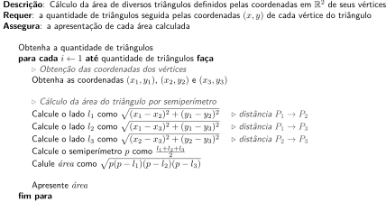

12 Repetições com for
A linguagem C permite laços de repetição, sendo um deles dado pelo for. Neste capítulo essa estrutura é abordada.
12.1 A estrutura de repetição for
O for é um comando usado para repetições definidas, ou seja, para as quais o número de vezes que os comandos serão executados já é conhecida. Por exemplo, se houver um dado disponível para cada hora do dia, sabe-se de antemão que há 24 dados e uma repetição com esse número de vezes pode ser empregado.
Na linha das demais estruturas de fluxo, também o for admite a repetição de um único comando, que pode ser simples ou composto. Suas demais partes são:
- A iniciação, a qual é composta pela atribuição inicial e é executada uma única vez antes das repetições;
- A condição_de_continuidade, cujo valor verdadeiro é condição para iniciar uma execução de comando;
- O incremento, o qual é usado para atualizar o valor da variável usada no laço.
O seguinte trecho de código pode ser usado como exemplo.
for (int i = 0; i < 10; i++)
printf("%d ", i);Ele pode ser considerado como “para i variando de 0 até 9” em um total de 10 repetições. A variável i é declarada dentro do for e, como tal, possui validade apenas nesse escopo. Seu valor inicial é zero e essa atribuição é feita antes das repetições. Antes de qualquer repetição, a condição i < 10 é avaliada e o printf somente é executado se a condição for verdadeira. Terminada a execução do comando do for, o incremento i++ é executado, alterando o valor de i antes da próxima verificação de continuidade.
Em termos gerais, o for exemplificado é absolutamente equivalente trecho seguinte.
{
int i = 0; // iniciação
while (i < 10) { // condição de continuidade
printf("%d ", i); // comando
i++; // incremento
}
}Observar que todo o código está dentro de um comando composto (entre chaves) é importante, visto que i tem validade exclusiva dentro do bloco de comandos.
Outros exemplos de repetição com for são apresentados na sequência.
// contagem de 10 até 1
for (int i = 10; i > 0; i--)
printf("%d ", i);// contagem de 1 até 100
for (int i = 1; i <= 100; i++)
printf("%d ", i);// contagem de 0 a 1 de 0,1 em 0,1
for (double i = 0; i <= 1; i += 0.1)
printf("%d ", i);12.2 for versus while
Conforme apresentado na seção anterior, a estrutura do for equivale à de um while. A questão, então, é porque usar o for?
A estrutura do for é um recurso vastamente utilizada nas linguagens de programação e comum também no pseudocódigo. Como ela é indicada para repetições já previsíveis, ter todas as informações necessárias logo no início do comando ajuda a compreensão do propósito do trecho de código.
Em princípio, ao se olhar a linha em que está o for já se tem ideia de como começa e como termina. O uso do while, por sua vez, indica uma imprevisibilidade do término, o que leva um eventual leitor do programa a procurar como os dados são modificados e como isso afeta a condição da repetição.
Não se deve usar um for para substituir um while nem um whilepara substituir um for.
Quando o número de repetições é conhecido, o for deve ser empregado; se esse número estiver em aberto, a melhor opção é o while.
Porém, não é incomum o uso do while em repetições definidas.
Um discussão mais ampla sobre o uso do for, complementando esta dica, está na seção Capítulo 15.
12.3 Repetições baseadas na entrada
Uma forma de se processar uma sequência de valores é prefixá-la com a quantidade de valores de entrada. Assim, se existirem 25 dados para serem processados, o valor 25 é introduzido antes dos dados, o que viabiliza ter, antes da repetição, o número de vezes de execução e, assim, usar o for adequadamente e com clareza.
Segue um exemplo simples de um programa que apresenta os primeiros \(n\) números ímpares naturais.
/*
Apresentação dos n primeiros números naturais ímpares
Requer: a quantidade n
Assegura: a apresentação dos n primeiros números ímpares
*/
#include <stdio.h>
int main(void) {
char entrada[160];
printf("Digite a quantidade desejada de ímpares: ");
fgets(entrada, sizeof entrada, stdin);
int quantidade;
sscanf(entrada, "%d", &quantidade);
for(int i = 0; i < quantidade; i++)
printf("%d ", 2 * i + 1);
printf("\n");
return 0;
}Digite a quantidade desejada de ímpares: 12
1 3 5 7 9 11 13 15 17 19 21 23 12.4 Exemplos
Nesta seção são apresentados alguns exemplos de programas simples com repetições para as quais o for é a escolha mais direta.
12.4.1 Média de 24 temperaturas
Na linha do exemplo das temperaturas hora a hora é apresentado o Algoritmo 12.1, o qual determina a média das temperaturas colhidas a cada hora de um dia.
Algoritmo 12.1: Cálculo da média das temperaturas horárias de um dia
Segue, agora, a implementação desse algoritmo.
/*
Cálculo da média de 24 medidas de temperatura colhidas hora a hora durante um dia
Requer: uma sequência de 24 temperaturas em Celsius
Assegura: a média dessas temperaturas
*/
#include <stdio.h>
int main(void) {
printf("Digite as temperaturas.\n");
double soma_temperaturas = 0;
for (int hora = 0; hora < 24; hora++) {
char entrada[160];
printf("Temperatura de %2dh: ", hora);
fgets(entrada, sizeof entrada, stdin);
double temperatura;
sscanf(entrada, "%lf", &temperatura);
soma_temperaturas += temperatura;
}
printf("Média diária: %.1fºC.\n", soma_temperaturas / 24);
return 0;
}Digite as temperaturas.
Temperatura de 0h: 9.7
Temperatura de 1h: 9.6
Temperatura de 2h: 10.6
Temperatura de 3h: 8.1
Temperatura de 4h: 14.1
Temperatura de 5h: 14.5
Temperatura de 6h: 12.1
Temperatura de 7h: 18.2
Temperatura de 8h: 19.2
Temperatura de 9h: 20.7
Temperatura de 10h: 24.2
Temperatura de 11h: 24.5
Temperatura de 12h: 18.4
Temperatura de 13h: 23.1
Temperatura de 14h: 21.5
Temperatura de 15h: 21.9
Temperatura de 16h: 23.9
Temperatura de 17h: 23.7
Temperatura de 18h: 18.7
Temperatura de 19h: 20.4
Temperatura de 20h: 16.6
Temperatura de 21h: 14.2
Temperatura de 22h: 8.0
Temperatura de 23h: 9.5
Média diária: 16.9ºC.12.4.2 Áreas de triângulos
O Algoritmo 12.2 é uma proposta de nível alto para a determinação da área de uma dada quantidade de triângulos. A quantidade de áreas a serem calculadas é a primeira entrada esperada pela solução.
Algoritmo 12.2: Cálculo da área de uma sequência de triângulos.

Para mais detalhes, segue a versão do Algoritmo 12.2 com menor grau de abstração. Nesta versão optou-se por fazer o cálculo da área por semiperímetro.
Algoritmo 12.3: Cálculo da área de uma sequência de triângulos usando o semiperímetro.

Uma implementação do Algoritmo 12.3 em C é apresentada na sequência.
/*
Cálculo da área de diversos triângulos definidos pelas coordenadas em R^2
de seus vértices
Requer: a quantidade de triângulos seguida pelas coordenadas $(x,y)$ de
cada vértice do triângulo
Assegura: a apresentação de cada área calculada
*/
#include <stdio.h>
#include <math.h>
int main(void) {
char entrada[160];
printf("Digite a quantidade de triângulos: ");
fgets(entrada, sizeof entrada, stdin);
int quantidade;
sscanf(entrada, "%d", &quantidade);
for (int i = 1; i <= quantidade; i++) {
printf("Triângulo %d:\n"
"Digite x e y do vértice 1: ", i);
fgets(entrada, sizeof entrada, stdin);
double x1, y1;
sscanf(entrada, "%lf%lf", &x1, &y1); // (x1, y1)
printf("Digite x e y do vértice 2: ");
fgets(entrada, sizeof entrada, stdin);
double x2, y2;
sscanf(entrada, "%lf%lf", &x2, &y2); // (x2, y2)
printf("Digite x e y do vértice 3: ");
fgets(entrada, sizeof entrada, stdin);
double x3, y3;
sscanf(entrada, "%lf%lf", &x3, &y3); // (x3, y3)
double lado1 = sqrt(pow(x1 - x2, 2) + pow(y1 - y2, 2));
double lado2 = sqrt(pow(x1 - x3, 2) + pow(y1 - y3, 2));
double lado3 = sqrt(pow(x2 - x3, 2) + pow(y2 - y3, 2));
double semiperimetro = (lado1 + lado2 + lado3) / 2;
double area = sqrt(semiperimetro * (semiperimetro - lado1) *
(semiperimetro - lado2) * (semiperimetro - lado3));
printf("Área do triângulo %d: %.2f.\n\n", i, area);
}
return 0;
}Digite a quantidade de triângulos: 2
Triângulo 1:
Digite x e y do vértice 1: 0 0
Digite x e y do vértice 2: 0 1
Digite x e y do vértice 3: 1 0
Área do triângulo 1: 0.50.
Triângulo 2:
Digite x e y do vértice 1: -1.5 -1
Digite x e y do vértice 2: 1.5 -1
Digite x e y do vértice 3: 0 3.8
Área do triângulo 2: 7.20.12.4.3 Desenho de um “círculo”
O programa seguinte mostra o aninhamento de dois laços for. Cada um deles vai de -10 a 10 e a saída é um * caso a distância ao “centro” seja menor que 10. No programa, ao invés de calcular \({\sqrt{x^2 + y^2} \leq 10}\), optou-se por usar a expressão equivalente \({x^2 + y^2 \leq 10^2}\), que não requer calcular a raiz quadrada.
/*
Desenho de um círculo usando caracteres
Assegura: apresentação de um círculo tão razoável quanto possível
*/
#include <stdio.h>
int main(void) {
for (int x = -10; x <= 10; x++) {
for (int y = -10; y <= 10; y++)
if (x * x + y * y <= 100) // distância < 10
printf("XXX"); // no círculo
else
printf(" "); // fora do círculo
printf("\n");
}
return 0;
} XXX
XXXXXXXXXXXXXXXXXXXXXXXXXXX
XXXXXXXXXXXXXXXXXXXXXXXXXXXXXXXXXXXXXXX
XXXXXXXXXXXXXXXXXXXXXXXXXXXXXXXXXXXXXXXXXXXXX
XXXXXXXXXXXXXXXXXXXXXXXXXXXXXXXXXXXXXXXXXXXXXXXXXXX
XXXXXXXXXXXXXXXXXXXXXXXXXXXXXXXXXXXXXXXXXXXXXXXXXXX
XXXXXXXXXXXXXXXXXXXXXXXXXXXXXXXXXXXXXXXXXXXXXXXXXXXXXXXXX
XXXXXXXXXXXXXXXXXXXXXXXXXXXXXXXXXXXXXXXXXXXXXXXXXXXXXXXXX
XXXXXXXXXXXXXXXXXXXXXXXXXXXXXXXXXXXXXXXXXXXXXXXXXXXXXXXXX
XXXXXXXXXXXXXXXXXXXXXXXXXXXXXXXXXXXXXXXXXXXXXXXXXXXXXXXXX
XXXXXXXXXXXXXXXXXXXXXXXXXXXXXXXXXXXXXXXXXXXXXXXXXXXXXXXXXXXXXXX
XXXXXXXXXXXXXXXXXXXXXXXXXXXXXXXXXXXXXXXXXXXXXXXXXXXXXXXXX
XXXXXXXXXXXXXXXXXXXXXXXXXXXXXXXXXXXXXXXXXXXXXXXXXXXXXXXXX
XXXXXXXXXXXXXXXXXXXXXXXXXXXXXXXXXXXXXXXXXXXXXXXXXXXXXXXXX
XXXXXXXXXXXXXXXXXXXXXXXXXXXXXXXXXXXXXXXXXXXXXXXXXXXXXXXXX
XXXXXXXXXXXXXXXXXXXXXXXXXXXXXXXXXXXXXXXXXXXXXXXXXXX
XXXXXXXXXXXXXXXXXXXXXXXXXXXXXXXXXXXXXXXXXXXXXXXXXXX
XXXXXXXXXXXXXXXXXXXXXXXXXXXXXXXXXXXXXXXXXXXXX
XXXXXXXXXXXXXXXXXXXXXXXXXXXXXXXXXXXXXXX
XXXXXXXXXXXXXXXXXXXXXXXXXXX
XXX Como cada caractere escrito sempre tem altura maior que a largura, optou-se por usar três caracteres para cada posição para tentar compensar essa diferença e obter o “círculo” com menor distorção. A escolha por três caracteres foi feita por tentativa e erro.